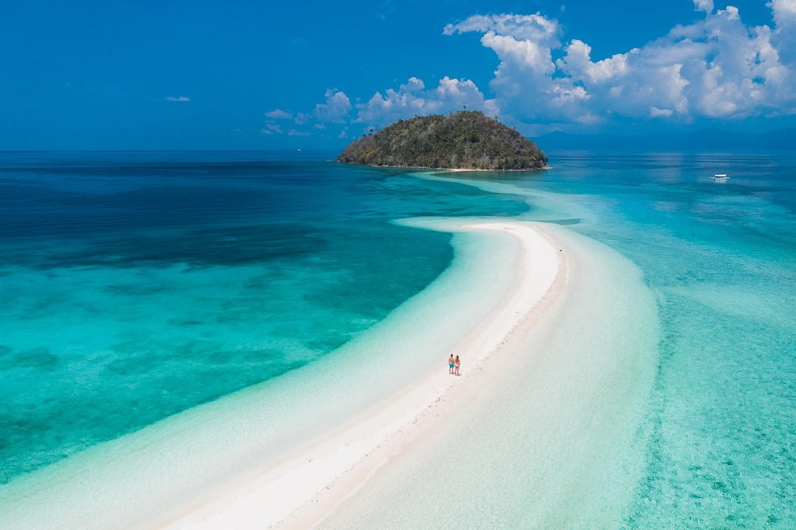
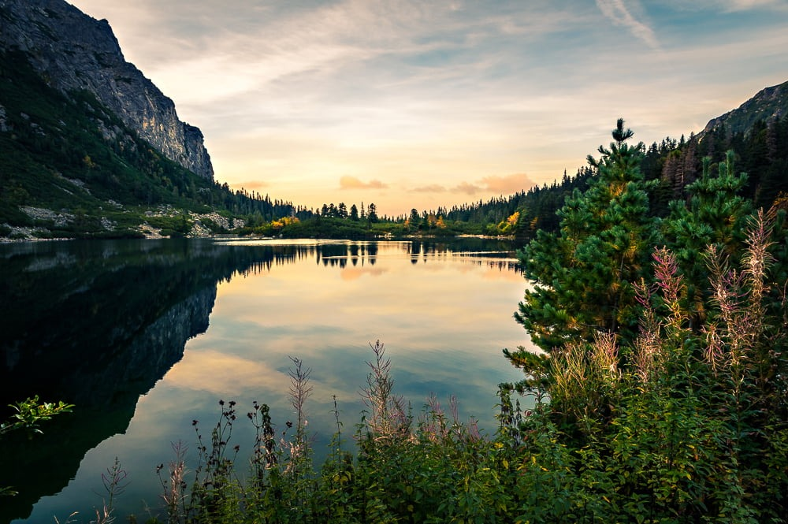

Introduction
Welcome to the world of travelling
Travelling is one of the best things a person can do. It helps us to see new places, meet new people and try new food.
Every traveller knows the feeling of stepping out of a station in a new city. Everything looks different and everything feels exciting.
The best trips do not take us away from our life. They make our life bigger. A cup of chai in the hills, a talk with a local shopkeeper, or a walk on a quiet beach can change how we see the world.

Travel Tips
How to plan a good trip
Many people try to see too many places in a short time. It is better to stay longer in fewer places and enjoy them properly.
The steps to plan a trip:
- Choose a place and check the best season to visit.
- Book your train or bus tickets early.
- Find a simple and safe place to stay.
- Plan only two or three activities in a day.
Things to carry in your bag:
- Light clothes.
- Power bank and charger.
- Water bottle.
- Small first-aid kit.
You can book train tickets here: IRCTC website

Sample Budget
Travelling does not need to be costly. Here is a rough budget for a two-day trip from Mumbai to a nearby hill station:
| Item | Cost (INR) | Tip |
|---|---|---|
| Train (both ways) | 300 | Book early |
| Stay for one night | 700 | Share a room |
| Food | 600 | Eat like the locals |
| Local travel | 300 | Walk or share rides |
| Total | 1,900 | Keep some extra money |
For more ideas about places to visit, you can explore this: Incredible India
Be a Good Guest
Every place we visit is someone's home. We should respect the local culture, keep the place clean and ask before taking photos of people.
We should also buy from local shops, so that the local people also get the benefit of tourism.
Learning a few simple words of the local language, like "hello" and "thank you", also helps a lot. People are happy when we try to speak their language, and it makes the trip friendlier for everyone.
Food is another great way to know a place. Try the local dishes at small shops, because that is where the real taste of the city is.
Conclusion
Photos may get old, but the memories of a trip stay with us forever.
Travelling teaches us patience when plans go wrong, and it teaches us to be thankful for the kindness of strangers.
We will rarely regret the trip we took, but we may regret the trip we kept postponing. So, where will your next journey begin?
For convinent trip travelling visit: Make My Trip